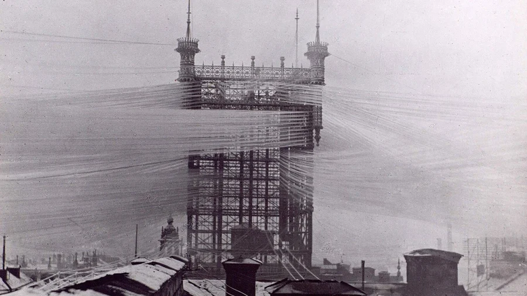

Noção de Filtragem#
O que são Filtros?#
São sistemas lineares invariantes no tempo
O objetivo é selecionar, com pouca ou nenhuma atenuação, determinadas faixas de frequência e rejeitar todas as demais de um sinal de entrada.
Em um contexto mais amplo define-se um filtro como um dispositivo que atenua mais algumas das frequência de um sinal aplicado em sua entrada do que outras.
Aplicação
Telefonia, sistemas de TV e áudio, radar, sonar, controle e em aplicações onde há alguma forma de processamento de sinais.
Definições preliminares#
Um filtro seletivo em frequência é um sistema linear invariante no tempo. Ele pode ser representado pelo diagrama de blocos abaixo, em que \(x(t)\) é o sinal de entrada e \(y(t)\) o de saída,
Utilizando a transformada de Laplace, a relação entre entrada e saída do sistema é dada por:
\(Y(s)=H(s)X(s)\) onde \(H(s)\) é a função de transferência do sistema
Admitindo \(s=j\Omega\) tem-se que:
\(Y(j\Omega)=H(j\Omega)X(j\Omega)\) onde \(H(j\Omega)\) é a resposta de frequência do sistema
Famílias de Respostas de Filtros#
Definições preliminares#
Forma polar de \(H(j\Omega)\):
Ganho: \( G(\Omega) = |H(j\Omega)|_{dB}=20log_{10}|H(j\Omega)|\)#
Atenuação: \(\displaystyle A(\Omega) = \frac{1}{|H(j\Omega)|_{dB}} = -20log_{10}|H(j\Omega)|\)#
A resposta de fase é expressa em graus ou radianos#
Exemplo: Filtro RC#

Característica em Frequência dos Filtros Seletivos Ideais#
Um filtro deixa passar sinais cujas frequências estão em determinadas bandas ou faixas (banda de passagem) e rejeita ou atenua as frequências que estão em outras bandas (bandas de atenuação ou de rejeição).#
A forma da resposta de amplitude (a magnitude) classifica o filtro de acordo com a localização das bandas de passagem e de rejeição.#
Para um filtro ideal as bandas de passagem e de rejeição são planas e a transição entre elas apresenta uma inclinação infinita.#
Desse modo pode-se obter os seguintes tipos de filtros:#
- passa-baixas, passa-altas;
- passa-banda ou passa-faixa;
- rejeita banda;
- passa tudo.
Famílias de Respostas de Filtros#
Especificação de um filtro Passa-Baixa#
O intervalo \([0, \Omega_P]\) corresponde a banda de passagem e a atenuação tem que ser menor que \(A_{max}\)#
O intervalo \([\Omega_P, \Omega_R]\) corresponde a banda de transição e nada é especificado para ela#
O intervalo \([\Omega_R, \infty [\) corresponde a banda de rejeição e aatenuação tem que ser maior que \(A_{min}\)#
Especificação de um filtro Passa-Faixa#
Famílias de Respostas de Filtros#
\(H(s)\) só com polos vai fazer uma Família de Passa-Baixa, \(H_{PB}(s)\)#
\(H_{PA}(s)\) pode ser interpretado com só zeros ou#
\(H_{PF}(s)\) pode ser como:#
$\(H_{PF}(s) = \frac{a's+b'}{s^2+as+b}\)$ com o |zero| < |polos|
Exemplo: toque do telefone#
frequências (Hz) |
1209 |
1336 |
1477 |
1633 |
|---|---|---|---|---|
697 |
1 |
2 |
3 |
A |
770 |
4 |
5 |
6 |
B |
852 |
7 |
8 |
9 |
C |
941 |
* |
0 |
# |
D |
By btphotosbduk - BDUK Broadband, CC BY 2.0, https://commons.wikimedia.org/w/index.php?curid=40750142

https://www.ericsson.com/en/blog/2014/10/when-the-telephone-lines-darkened-the-sun-in-stockholm
from IPython.display import YouTubeVideo
YouTubeVideo('YpUy1Ra_WN0', width=600, height=300)
Soma de duas senoides#
import matplotlib.pyplot as plt
import numpy as np
f1 = lambda x: np.sin(2*np.pi*600*x)
f2 = lambda x: np.sin(2*np.pi*60*x)
x = np.arange(0, 0.05, 0.0001)
plt.subplot(211)
plt.plot(x, f1(x))
plt.subplot(212)
plt.plot(x, f1(x)*(1+f2(x)/2))
[<matplotlib.lines.Line2D at 0x7f3dc19b4bd0>]
import IPython.display as ipd
ipd.Audio('data/DTMF_dialing.ogg') # load a local WAV file
Famílias de Respostas de Filtros#
Famílias de Respostas de Filtros#
Função de Transferência#
Os circuitos apresentam como função de transferência uma razão de polinômios e portanto não possuem descontinuidades
Um filtro realizável, é representado, no domínio da frequência, pela função do sistema que é uma razão entre dois polinômios.
\(\alpha_k\) e \(\beta_k\) são coeficientes constantes e \(N\) é a ordem do filtro.
A maior potência (M) do numerador define o número de zeros da função de transferência.
A maior potência (\(N\)) do denominador define o número de pólos de \(H(s)\). O valor de \(N\) define a seletividade da função de transferência, a taxa de atenuação na banda de transição.
Famílias de Respostas de Filtros#
As respostas em frequência mais importantes e mais utilizadas nos projetos de filtros são:
resposta de Butterwoth;
resposta Chebyshev;
resposta Cauer ou filtros elípticos;
resposta Bessel.
O objetivo é aproximar o melhor possível a resposta dos filtros ideais.
Estas respostas são realizadas a partir de funções de transferência que são a razão entre dois polinômios em \(s\).
As famílias, aqui discutidas, são apresentadas para os protótipos passa-baixas, os outros tipos de filtros podem ser facilmente obtidos por transformação de freqüências.
Considerando o filtro ideal Passa-Baixa#
onde \(\displaystyle H^{'}(s) = \frac{1}{H(s)}\), \(\delta\) é um valor muito pequeno e \(\Delta\) é um valor muito grande
Relação de Feldtkeller#
onde \(K(s)\) é a função de aproximação
Filtros Butterworth#
Esses filtros são baseados nas funções \(y=x^N\) com \(K(\Omega) = \epsilon(\frac{\Omega}{\Omega_P})^N\)#
import numpy as np
import matplotlib.pylab as plt
K = lambda w: e*(w/wp)**N
wp = 1
e = 1
w = np.arange(0,1.5,0.1)
N = 1
plt.plot(w, K(w))
N = 2
plt.plot(w, K(w))
N = 3
plt.plot(w, K(w))
N = 4
plt.plot(w, K(w))
plt.xlabel('$\Omega/\Omega_P$')
plt.ylabel('|K($\Omega$|)')
plt.figure()
Hl = lambda w: 1+K(w)**2
N = 1
plt.plot(w, Hl(w))
N = 2
plt.plot(w, Hl(w))
N = 3
plt.plot(w, Hl(w))
N = 4
plt.plot(w, Hl(w))
plt.xlabel('$\Omega/\Omega_P$')
plt.ylabel('|Hl($\Omega$)|')
plt.figure()
H = lambda w: 1/(1+K(w)**2)
N = 1
plt.plot(w, H(w))
N = 2
plt.plot(w, H(w))
N = 3
plt.plot(w, H(w))
N = 4
plt.plot(w, H(w))
plt.xlabel('$\Omega/\Omega_P$')
plt.ylabel('|H($\Omega$)|')
Text(0, 0.5, '|H($\\Omega$)|')
Família de funções Butterworth#
A função de atenuação \(A(\omega)\) é
Condições de projeto:
\(\omega = \omega_p \rightarrow\) máxima atenuação na banda de passagem
\(\omega = \omega_r \rightarrow\) mínima atenuação na banda de rejeição
A ordem \(N\) do filtro é determinada pela atenuação em \(\omega_r\) e da relação entre \(\omega_r\) e \(\omega_p\).
Filtro butterworth#
Ordem N
Filtro Butterworth#
O filtro de Buterworth tenta aproximar característica plana (derivadas iguais a zero em \(\omega = 0\)) da banda de passagem do filtro ideal através de uma função polinomial.
Ele apresenta uma resposta de amplitude maximamente plana na faixa de passagem e uma resposta monotônica (decrescente) na banda de parada.
O módulo ao quadrado da sua função de transferência é definido por:
Em que \(\omega_p\) é a frequência de corte (queda de 3dB no ganho) e \(N\) é a ordem do filtro.
Filtro Butterworth#
Admitindo \(\Omega_0=\Omega/ \Omega_c\) observa-se as seguintes propriedades:
|H(0)|=1 \(\rightarrow\) ganho igual a 1 na faixa de passagem.
|H(1)|=0.707 \(\rightarrow\) frequência de corte igual a 1 rad/s.
Expandindo \(|H(\Omega_n)|\) em série de Taylor tem-se que:
As derivadas de \(|H(\Omega_n)|\) para \(\Omega_n=0\) são todas nulas,
Por isso o nome: aproximação maximamente plana
Filtro Butterworth#
Conforme N aumenta, a resposta de amplitude torna-se mais plana na faixa de passagem e a taxa de atenuação na banda de transição torna-se mais acentuada.
Acima da frequência de corte, \(\omega_n>>1\) ou \(\omega>>\omega_c\) , a função de transferência exibe uma taxa de atenuação correspondente a 20N dB por década (cada vez que se aumenta por 10 a frequência) ou 6N dB por oitava (cada vez que se dobra a frequência). Nesta situação a resposta assintótica será:
Filtro Butterworth#
Os pólos do filtro de Butterworth são aqueles anulam o denominador da função de transferência
Fazendo
\(s=j\Omega \to -s^2=\Omega^2\); e
\(\frac{\epsilon^2}{\Omega_P^{2N}} = 1\) (filtro normalizado).
Os polos se encontram em: \(1+(-s^2)^N=0\)
Para a solução do problema separa-se \(N\) em par ou impar:
\(N\) impar: \(1-s^{2N} = 0\) então \(\{1, -1\}\) pertencem ao conjunto das soluções; \(p_k = e^{jk\frac{2\pi}{2N}} = e^{jk\frac{\pi}{N}}, k = 0, \ldots, 2N-1\)
\(N\) par: \(1+s^{2N} = 0\) \(p_k = e^{j(k\frac{2\pi}{2N}+\frac{\pi}{2N})} = e^{j(2k+1)\frac{\pi}{2N}}, k = 0, \ldots, 2N-1\)
São escolhidos para \(H(s)\) apenas as raízes que estão no semi-plano lateral esquerdo
Filtro butterworth#
Os polos do filtro Butterworth#

Famílias de Respostas de Filtros#
Filtro Chebyshev#
Apresenta maior taxa de atenuação na banda de transição do que as outras famílias de filtros.
Tem-se dois tipos: I e II
TIPO I: Apresenta comportamento oscilatório na banda de passagem (equiripple) e monotônico na banda de atenuação.
TIPO II: Comportamento monotônico na banda de passagem e oscilatório na banda de atenuação.
Resposta de Amplitudes: Tipo I
\(\epsilon\): parâmetro controla a ondulação (ripple) na banda de passagem.
\(C_N(x)\): Polinômio de Chebyshev de ordem N.
Filtro de Chebyshev#
O polinômio de Chebyshev de ordem \(N\) é dado por
Fórmula de recursão para o cálculo de CN(x)
\(C_n(x)\): Varia entre \(\pm\) para |x| \(\leq\) 1. Aumenta monotonicamente para \(|x|>1\)
Filtro de Chebyshev#
Polinômios de Chebyshev#
import numpy as np
import matplotlib.pylab as plt
wp = 1
e = 0.1
W = np.arange(0,10,0.01)
def Chebyshev(W, N):
C = []
for w in W:
if w < 1:
C.append(np.cos(N*np.arccos(w)))
else :
C.append(np.cosh(N*np.arccosh(w)))
return C
def FeldtKeller(C, e):
return(1 + e*np.multiply(C, C))
def H(C, e):
return(1/FeldtKeller(C, e))
C0 = Chebyshev(W, 0)
C1 = Chebyshev(W, 1)
C2 = Chebyshev(W, 2)
C3 = Chebyshev(W, 3)
C4 = Chebyshev(W, 4)
plt.xscale("log")
plt.plot(W, C0, W, C1, W, C2, W, C3, W, C4)
plt.xlabel('$\Omega/\Omega_P$')
plt.ylabel('|C($\Omega$|)')
plt.figure()
plt.xscale("log")
plt.plot(W, FeldtKeller(C0, e), W, FeldtKeller(C1, e), W, FeldtKeller(C2, e), W, FeldtKeller(C3, e), W, FeldtKeller(C4, e))
plt.xlabel('$\Omega/\Omega_P$')
plt.ylabel('|Hl($\Omega$)|')
plt.figure()
plt.xscale("log")
plt.plot(W, H(C0, e), W, H(C1, e), W, H(C2, e), W, H(C3, e), W, H(C4, e))
plt.xlabel('$\Omega/\Omega_P$')
plt.ylabel('|H($\Omega$)|')
Text(0, 0.5, '|H($\\Omega$)|')
Filtro de Chebyshev#
Resposta de Amplitudes para o filtro de Chebyshev: Tipo I#
Filtro de Chebyshev#
Propriedades#
1- Para \(\Omega=0\) tem-se:
2- Para \(\Omega = \Omega_p\) , o ganho é mínimo na banda de passagem ou máxima atenuação nesta banda:
Filtro de Chebyshev#
Propriedades#
3- A ondulação (em dB) na banda de passagem é definida como:
4- O número total de máximos e mínimos na banda de passagem é determinado pela ordem do filtro.
5- A banda passante é definida como a faixa de frequências em que a ondulação oscila na amplitude mínima.
Comparação das respostas dos filtros de Butterworth e Chebyshev#

Filtro de Chebyshev#
Lozalização dos polos#
Filtro de Chebyshev#
Lozalização dos polos#
Os pólos do filtro de Chebyshev (tipo I) estão localizados em uma elipse cujos eixos maior (\(r_1\)) e menor (\(r_2\)) são dados por:
O parâmetro \(\beta\) depende de \(\epsilon\), e é dado por:
Cálculo dos pólos:
Filtro de Chebyshev#
Para o projeto dos filtros de Chebyshev são requeridos 4 parâmetros:
Frequências da banda de passagem e de atenuação: \(\Omega_p\) e \(\Omega_s\);
Ondulação (ripple) (\(\delta_p\)) ou atenuação máxima (banda de passagem)
Atenuação mínima da banda de atenuação.
O parâmetro \(\epsilon\) é calculado através da ondulação (ripple):
A ordem fo filtro é determinada através de:
Filtro de Chebyshev#
Ou mais usualmente,
Com os valores de \(N\) e \(\epsilon\), os pólos são determinados pelas equações anteriores:
calcula-se \(\beta\);
calcula-se \(r_1\) e \(r_2\);
calcula-se os pólos \(p_k\) \(k=0,1, 2, \dots, N-1\)
Filtro de Chebyshev#
Efeitos dos parâmetros na resposta do filtro de Chebyshev#
Filtro Chebyshev#
Exemplo: Determine a função de transferência de um filtro de Chebyshev que satisfaça as seguintes especificações: ondulação na banda de passagem r = 2 dB, \(\Omega_p\) = 1000\(\pi\) rad/s (\(F_P\) = 500 Hz), \(\Omega_s\) = 4000\(\pi\) rad/s (\(F_s\) = 2000 Hz), \(A_s\) = 40 dB (\(\delta_{MIN}\)).
Cálculo de \(\epsilon\):
Cálculo da ordem do Filtro:
Filtro Chebyshev#
Filtro de Chebyshev Tipo II#
Também chamado de filtro inverso de Chebyshev.
Apresenta comportamento monotônico na banda de passagem e oscilatório na banda de atenuação.
Para se obter a resposta em frequência deste filtro, a variável \(\Omega_n\) é recolocada por \(1/\Omega_n\) , o que transforma a resposta para passa-altas.
Subtraindo esta característica da unidade obtém o filtro passa-baixas de Chebyshev tipo II.
Neste caso, o módulo ao quadrado da resposta em frequência será dado por:
\(\epsilon\): parâmetro controla a ondulação (ripple) na banda de atenuação. \(C_N(x)\): Polinômio de Chebyshev de ordem N.
Filtro Chebyshev#
Resposta de Amplitude para o filtro de Chebyshev: Tipo II#
Filtro Chebyshev#
A função de transferência apresenta zeros e pólos.
Os zeros estão localizados no eixo imaginário tal que:
Os pólos são os recíprocos daqueles do filtro convencional de Chebyshev (tipo I).
Denotando os pólos do filtro inverso de Chebyshev por: $\( p^{'}_k=\sigma^{'}_k+j\Omega^{'}_k \)$
\(\sigma_k\) e \(\Omega_k\) são as partes real e imaginária do filtro de Chebyshev tipo I.
Filtro Chebyshev#
Modo de se especificar o filtro de Chebyshev tipo II:#
Frequência da banda de passagem (\(\Omega_p\)) e atenuação máxima permitida nesta banda \(A_p(\delta_p)\).
Frequência da banda de atenuação (\(\Omega_s\)) e da atenuação mínima permitida nesta banda \(A_s(\delta_s)\).
O ganho máximo na banda de passagem é admitido ser igual a 1, tal que, \(1/\delta_p<|H(j\Omega)|<1\) para \(0<\Omega<\Omega_p\).
A ordem do filtro pode ser encontrada como o menor inteiro que satisfaz a seguinte relação:
Filtro Chebyshev#
O fator de ondulação é dado por:
O filtro é projetado através do seguinte procedimento:
Determina-se \(\epsilon\)
Determina-se a ordem do filtro
Determina-se os zeros
Calcula-se os pólos do filtro de Chebyshev tipo I. Os recíprocos serão os pólos do filtro inverso tipo II
A função de transferência, com ganho na banda passante igual a 1, é determinada por:
Filtro Chebyshev#
Exercício#
Determine a função de transferência de um filtro de Chebyshev tipo II que satisfaça as seguintes especificações:
atenuação máxima banda de passagem \(A_p\) = 0.1 dB, \(\Omega_p\) = 2000\(\pi\) rad/s (\(F_p\) = 1000 Hz),
\(\Omega_s=4000\pi\)rad/s (\(F_s\) = 2000Hz), atenuação mínima na banda de atenuação \(A_s\) = 20 dB.
Filtros Elípticos#
Os filtros elípticos (ou de Cauer) apresentam resposta em frequência com ondulações tanto na banda de passagem quanto na de atenuação.
A resposta em frequência é especificada do mesmo modo que nas seções anteriores.
Ondulação ou variação máxima \(Ap(\delta p)\) na banda de passagem;
Banda de transição (\(\Omega_s-\Omega_p\))
Ondulação ou resposta As (\(\delta s\)) na banda de atenuação,
A ordem (N) do filtro é determinada
Especificando as ondulações e frequências da banda de transição este projeto conduzirá a um filtro com ordem mínima.
Filtros Elípticos#
A resposta em amplitude apresenta comportamento oscilatório (equiripple) tanto na banda de passagem quanto na banda de atenuação.
Ela apresenta zeros e pólos, sendo uma generalização dos filtros de Chebyshev.
É caracterizada pela seguinte equação
\begin{equation} |H(j\Omega)|^2=\frac{1}{1+\epsilon^2G^2_N\left(\frac{\Omega}{\Omega_p}\right)} \end{equation}
\(G(\Omega)\) é uma função racional, que é uma generalização do polinômio de Chebyshev, gerada através da função elíptica Jacobiana,
\(\epsilon\) é o parâmetro relacionado com a ondulação na banda de passagem.
Resposta de Amplitude para o filtro Elíptico#
Filtro Elíptico#
Cálculo da ordem do filtro:
Determine o fator de seletividade:
\begin{equation}k=\frac{\Omega_p}{\Omega_s}\end{equation}
Determine o fator de discriminação:
Faça:
Determine a ordem:
Filtro de Bessel#
Os filtros de Bessel são uma classe de filtros somente com pólos, caracterizados por apresentarem fase linear (atraso de tempo constante) na banda de passagem.
Eles são caracterizados pela seguinte função de transferência:
O polinômio de Bessel de ordem N, que pode ser expresso pela seguinte equação:
Filtro de Bessel#
Equação de Recursão para o polinômio de Bessel
Com condições inicias \(B_0(s)=1\) e \(B_1(s)=s+1\).
Diferentemente dos filtros de Butterworth e de Chebyshev, não existe uma regra simples para se determinar as raízes de B(s), porém elas podem ser determinadas através de métodos computacionais.
O filtro de Bessel tem sido empregado no projeto de filtros analógicos quando se necessita de um filtro com característica de fase linear.
Comparação das respostas dos filtros - ordem 6#
Transformação de Frequências#
O estudo realizado até aqui foi concentrado nos protótipos de filtros passa-baixas.
Vamos aprender nesta seção a como transformar um protótipo passa-baixas nos outros tipos de respostas em frequência dos filtros.
Passa-altas – passa-banda e rejeita banda.
Considerações:
A transformação será realizada a partir de um protótipo passa-baixas normalizado, com frequência de corte ou frequência da banda de passagem igual a 1 rad/s.
Resposta em frequência do protótipo normalizado:
Desnormalização#
Se é disponível um protótipo de qualquer tipo, normalizado na frequência de 1 rad/s.
A normalização para uma arbitrária frequência \(\Omega_0\) é realizada por meio da seguinte substituição:
Em que \(\Omega_p\) pode ser a frequência de corte \(\Omega_c\) ou a frequência da banda de passagem
Observe que se a atenuação máxima na banda de passagem for 3 dB, então \(\Omega_p = \Omega_c\) .
Transformação passa-baixas para passa-altas#
A transformação passa-baixas para passa altas é realizada através das seguintes expressões:
Em que \(\Omega_p\) pode ser a frequência de corte \(\Omega_c\) ou a frequência da banda de passagem.
\(\Omega_{sn}\) é a frequência da banda de atenuação do filtro normalizado.
Transformação passa-baixas para passa-banda#
Suponha que se quer uma transformação para passa-banda com resposta plana entre \(\Omega_1\) e \(\Omega_2\).
Em que \(\Omega_0\) é a frequência de ressonância do filtro
Transformação passa-baixas para rejeita-banda#
Suponha que se quer uma transformação para rejeita-passa banda com rejeição entre \(\Omega_1\) e \(\Omega_2\).
Transformações de um protótipo passa-baixas com frequência \(\Omega_p\)#
Passa-altas:
Passa-banda:
Rejeita-banda:
Frequência de ressonância: